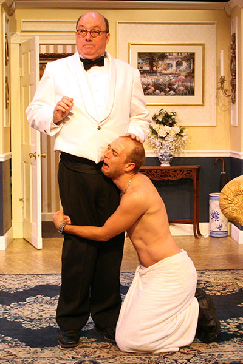

Out of Order
September 21 through October 14, 2012
Just in time for Election season. In the tradition of great Stage Door comedies like Perfect Wedding, Unnecessary Farce and Lend Me a Tenor, take one crafty politician, a naive typist in her underwear, an unsuspecting new husband, and a "body," that keeps disappearing, and what do you get? An evening of hysterical laughter. No one does farce like Stage Door Players!
by Ray Cooney

Performance times
Friday and Saturday @ 8:00pm, Sunday Matinees @ 2:30pm
Tickets can also be purchased online from: TIX.com


It's a Wonderful Life: A Live Radio Play
November 30 through December 16, 2012
This beloved American holiday film classic comes to captivating life as a live 1940s radio broadcast. With the help of a five member ensemble that brings a few dozen characters to the stage, the story of idealistic George Bailey unfolds right before our very eyes (and ears) as he considers ending his life one fateful Christmas Eve.
Adapted by Joe Landry
Visiting Mr. Green
January 24 through February 17, 2013
Mr. Green wanders into New York traffic and is almost hit by a car driven by Ross Gardiner. When the young man is given community service to help the recent widower we find ourselves at the start of a comedy/drama about two men who at first can't stand to be in the same room together. But as they get to know each other, they find some shaky common ground, and help to heal the old wounds they've both been hiding.
by Jeff Baron
I Love You, You're Perfect, Now Change
March 22 through April 14, 2013
This musical celebration of the mating game takes on the truths and myths behind that enigma known as "the relationship." Exploring the journey from dating and waiting to love and marriage, to the agonies and triumphs of in-laws and newborns, this hilarious revue pays tribute to those, young and old, who have loved and lost, and have dared to ask, "Say, what are you doing Saturday night?"
Book and Lyrics by Joe DiPietro
Music by Jimmy Roberts
Dancing at Lughnasa
May 17 through June 6, 2013
Winner of the 1992 Tony Award for Best Play, and regarded as "the most elegant and rueful memory play since The Glass Menagerie," this extraordinary drama is the story of five unmarried sisters eking out their lives in a small village in Ireland in l936. Their spare existence is interrupted by brief, colorful bursts of music from the radio, their only link to the romance and hope of the world at large. Widely regarded as Brian Friel's masterpiece, this haunting play is a tribute to the spirit and valor of the past.
by Brian Friel
Once Upon a Matress
July 12 through August 4, 2013
Once upon a time, many moons ago in a far off place..... If you thought you knew the story of "The Princess and The Pea," you may be in for a big surprise! Containing a score of wonderful songs, by turns hilarious and raucous, romantic and melodic, this twisted spin on the familiar classic will make sure you never look at fairy tales quite the same way again.
Music by Mary Rodgers
Book by Jay Thompson and Dean Fuller